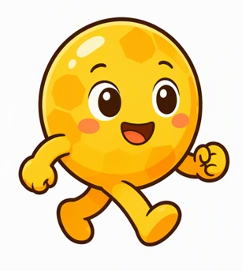
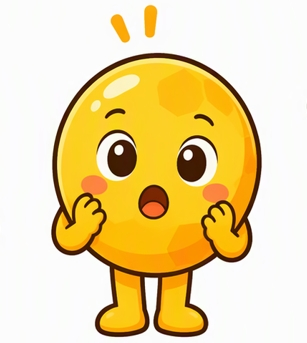

포도당의 여행 🍡
떡볶이를 먹으면, 그 속의 탄수화물(녹말)은 포도당으로 바뀌어 우리 몸을 여행해요!
소화 → 흡수 → 순환 → 호흡 → 배설 → 세포호흡까지, 포도당과 함께 떠나요!
떡볶이를 먹었어요! 🌶️
방과 후, 간식으로 떡볶이를 먹었어요. 떡볶이의 쫀득한 떡은 쌀가루로 만들어져서 탄수화물(녹말)이 아주 많아요. 우리 몸은 이 녹말을 그대로 사용할 수 없어서, 소화 과정을 거쳐 포도당으로 바꾼 뒤 흡수해요. 오늘부터 포도당 한 알의 눈으로 우리 몸을 여행해 봐요!


소화 – 포도당으로 변신하기


흡수 – 융털 속으로 들어가기
작은창자 안쪽에는 융털이라는 손가락 돌기가 잔뜩 있어요. 융털 덕분에 흡수 면적이 넓어지고, 포도당은 융털의 상피세포를 지나 모세혈관으로 들어가요. 포도당 캐릭터를 끌어서(드래그) 모세혈관(빨간 점선 원)에 넣어 주세요!

(여기로 드래그!)
이제 포도당은 혈장에 녹아 간문맥을 따라 간으로 먼저 이동해요.

순환 – 혈액 타고 온몸 여행
심장은 온몸의 펌프예요. 포도당은 혈장에 녹아 이동하고, 산소는 적혈구에 실려 이동해요. 버튼을 눌러 두 순환 경로를 따라가 볼까요?

호흡 – 세포호흡으로 에너지 만들기
배설 – 포도당의 운명은?
혈액이 콩팥을 지날 때, 콩팥단위(토리 → 보먼주머니 → 세뇨관)에서 오줌이 만들어져요. ① 여과: 토리에서 혈액의 물·포도당·아미노산·무기염류·요소가 걸러져요. ② 재흡수: 세뇨관에서 필요한 물질(포도당 포함!)이 다시 혈액으로 돌아가요. ③ 분비: 노폐물이 오줌 쪽으로 내보내져요.


통합 정리 – 포도당의 여정 지도
지금까지의 여행을 한 장으로 정리해 봐요. 소화·순환·호흡·배설 네 기관계가 함께 일해서, 우리 몸의 세포는 세포호흡으로 에너지를 얻을 수 있어요!

🗺️ 여정 복습 카드 (카드를 누르면 그 장면으로 이동해요)
📊 나의 학습 결과
| 학습 항목 | 결과 | 틀린 횟수 | 다시 풀기 |
|---|
※ 학습 기록은 이 브라우저에만 저장돼요. (인터넷 연결 없이 동작)